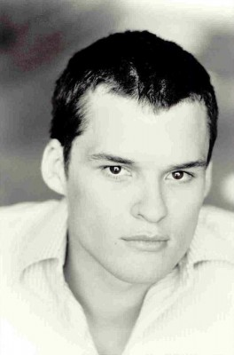

#2397 LOL - Laughing Out Loud
Alternativ: LOL

 IMDB-Wertung: 4.4 / 10
IMDB-Wertung: 4.4 / 10  Metascore: 0
Metascore: 0 
LOL zeigt das Leben der jungen Generation, für die Internet, Facebook und Handys ganz normal zum Alltag gehören. Auch die junge Lola ist eine modernes junges Mädchen, und doch plagen sie ganz klassische Probleme: Liebeskummer, Ärger mit den Freundinnen und natürlich vor allem mit ihrer Mutter Anne. Da Anne ihre Tochter nicht mehr versteht, liest sie heimlich ihr Tagebuch, in dem Lola von ihrer ersten Liebe Kyle berichtet und dass sie mit ihm ihr erstes Mal haben will. Als Lola erfährt, was ihre Mutter getan hat, stehen alle Zeichen auf Sturm. Um diesen zu schlichten bleibt Anne nicht mehr viel Zeit, denn Lolas Klassenfahrt nach Paris steht kurz bevor. Und dort will sie sich nicht nur mit Kunst und Fremdsprachen beschäftigen.
Jahr: 2012
Dauer: 97 Minuten
FSK:
Land: USA Studio: LionsgateTonspuren:
Untertitel: Deutsch,
Auflösung: 720p (1280x544) Größe: 4485 MB
Genre: Komödie, Drama, Liebe
Regisseur: Lisa Azuelos
Drehbuch: Lisa Azuelos, Kamir Aïnouz, Lisa Azuelos, Nans Delgado
Soundtrack: Rob Simonsen
Darsteller:
- Jean-Luc Bilodeau als Jeremy
 Douglas Booth als Kyle
Douglas Booth als Kyle Miley Cyrus als Lola
Miley Cyrus als Lola- Sam Derence als Ashley's Father
 Nora Dunn als Emily's Mother
Nora Dunn als Emily's Mother- Lina Esco als Janice
- Trevor Fahnstrom als Ethan
- George Finn als Chad
- Alix Freihage als Young Wife
- Lynnette Gaza als Principal
 Gina Gershon als Kathy
Gina Gershon als Kathy Ashley Greene als Ashley
Ashley Greene als Ashley Jay Hernandez als James
Jay Hernandez als James- Loretta Higgins als Kyle's Mother
- Ashley Hinshaw als Emily
 Thomas Jane als Allen
Thomas Jane als Allen Demi Moore als Anne
Demi Moore als Anne-  Austin Nichols als Mr. Ross
- Delphine Pontvieux als Joan of Arc's Mother
- Leisa Pulido als Janice's Mother
 Adam G. Sevani als Wen
Adam G. Sevani als Wen- Russell Steinberg als Coach
 Fisher Stevens als Roman
Fisher Stevens als Roman- Marlo Thomas als Gran
- Michelle Burke als Lauren
- Brady Tutton als Jackson
- Tedra Millan als Locker Room Girl
- Sydney Alton als Student , uncredited
- Ewan Bourne als Soccer Player , uncredited
- Abbie Dunn als Student , uncredited
- Gilbert Galon als CTA Passenger , uncredited
- Pennie-Marie Hawkins als Diner Patron , uncredited
- Ericka Johnson als HS Teacher , uncredited
 Demi Kazanis als Lola's friend , uncredited
Demi Kazanis als Lola's friend , uncredited Don Kress als Businessman , uncredited
Don Kress als Businessman , uncredited- Dervis Lici als Restaurant Cook , uncredited
- Vivian Le Borgne als Lily's Mother
- Bridget Brown als Lily
- Jim Carrane als Biology Teacher
- Woody Carter als Male Student
- Felix Dayan als French Father
- Rebecca Finnegan als Therapist
- Vichaan Kue als David
- Madelyn Lasky als Joan of Arc
- Emma Nolan als Emma
 Dennis North als Kyle's Father
Dennis North als Kyle's Father- Barbara Robertson als French Teacher
- Tanz Watson als Lloyd
- Armon York Williams als Uniformed Cop
- Ismail Abdul-Aziz als Club Bouncer , uncredited
Datei: X:\2012(G-M)\LOL - Laughing Out Loud (2012, FSK, 1280x544).mkv seit 05.11.2015
Festplatte: HD 2012(A-M)
 Es gibt insgesamt 112 Filme in der Gruppe '2012(G-M)'
Es gibt insgesamt 112 Filme in der Gruppe '2012(G-M)'